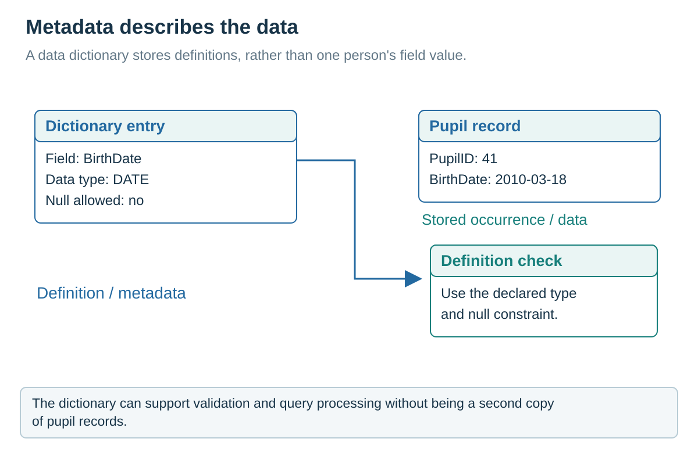

Data management and the data dictionary
Visual overview
Metadata describes the data

Visual transcript
- The field definition says BirthDate has type DATE and does not allow null in this example.
- 2010-03-18 is a value belonging to a particular pupil record.
- The DBMS uses metadata when checking a proposed value.
Identify metadata
A DBMS provides software services to store, retrieve and update database data. It maintains a data dictionary containing metadata: information about the database's tables, fields, types, lengths, keys and constraints rather than the ordinary records themselves.
Use a shared definition
When a table or query is defined, the DBMS can consult that metadata to check field names and permitted structures. Maintaining definitions centrally reduces the risk that separate applications use conflicting assumptions about the same stored data.
One school example: definition versus stored fact
| Metadata in the dictionary | Application data |
|---|---|
| StudentName: VARCHAR(40) | Student 21 has name Amina. |
| StudentID: INTEGER, primary key | StudentID 21 identifies this student. |
| Student.TutorID references Tutor.TutorID | Amina has TutorID 7. |
| Mark must be between 0 and 100 | Amina has Mark 73. |
Follow a use of metadata
A request for StudntName contains a name absent from the schema, so it cannot be resolved as the intended field. A request assigning Mark 145 can be checked against the stored range rule. Neither decision requires the dictionary to contain Amina as a metadata value.
Core explanation · Exam essentials
- The data dictionary stores metadata describing tables, fields, types, lengths, keys and constraints.
- The DBMS uses these definitions when checking and processing requests.